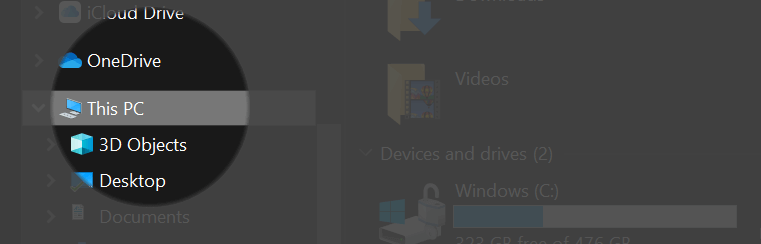

进阶锐化控制 in Photoshop

一幅图像能否吸引眼球，最简单的方式就是将主体突出，比如人物的眼睛。所以，在修图中最后一步往往是锐化图像。
锐化的原理就是将像素颜色反差的地方加强反差，而不破坏颜色相似地方的自然过渡。
下面介绍三种不同的方式进行图像锐化。使用的工具主要有以下：
- smart sharpen，blend mode：darken and lighten
- gaussian blur，apply image：subtract
- high pass，contract
一幅图像能否吸引眼球，最简单的方式就是将主体突出，比如人物的眼睛。所以，在修图中最后一步往往是锐化图像。
锐化的原理就是将像素颜色反差的地方加强反差，而不破坏颜色相似地方的自然过渡。
下面介绍三种不同的方式进行图像锐化。使用的工具主要有以下：

众所周知，现在百度盘非会员下载速度十分慢，还要求必须使用他的客户端下载，我的资料现在也基本不会存在百度云了。但是在下载已经保存在上面的资源或者网络别人分享的资源，还是偶尔要用到，而我又对百度十分的讨厌，也不会去充值会员，所以研究了下如何解决非会员的限速问题。
The Hypertext Transfer Protocol (HTTP) is an application protocol for distributed, collaborative, hypermedia information systems.[1] HTTP is the foundation of data communication for the World Wide Web, where hypertext documents include hyperlinks to other resources that the user can easily access, for example by a mouse click or by tapping the screen in a web browser.
以上说明摘录自 Wikipedia，HTTP 全称为超文本传输协议，设计HTTP最初的目的是为了提供一种发布和接收HTML页面的方法。通过HTTP或者HTTPS协议请求的资源由统一资源标识符（Uniform Resource Identifiers，URI）来标识。

上图是我拍摄的油菜花照片，当我想要单独修改花的颜色或者修改绿色枝干的颜色时可以方便的实现吗？使用 Photoshop 可以轻松达到想要的效果。
这里用到的技术细节其实就是提取出想要修改部分，然后修改颜色。有两个方法可以进行提取：color range 和 hue。

当你需要给别人进行演示的时候，你在电脑上的操作流程，可能由于距离或者颜色让观看者无法很好的看清楚。当你正在进行 Photoshop 教学的时候，你需要录制你的屏幕记录你的操作过程，以及再进行相关操作时能够清晰地注释出点击方式。
如果你有遇到以上场景，这篇教程就能够帮助到你。